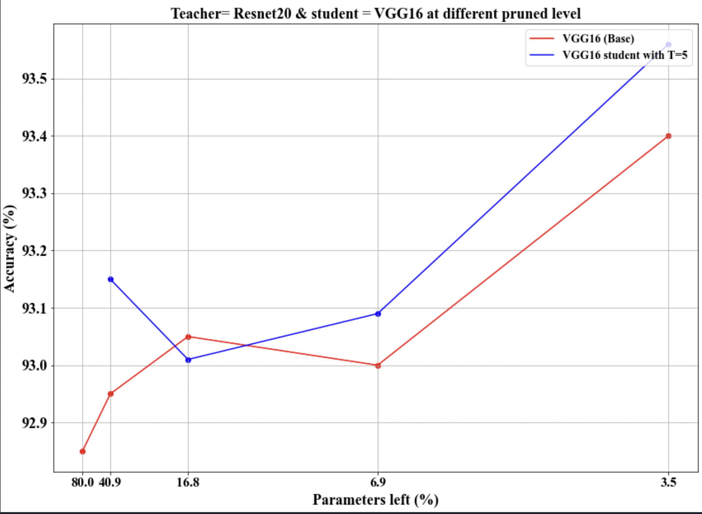
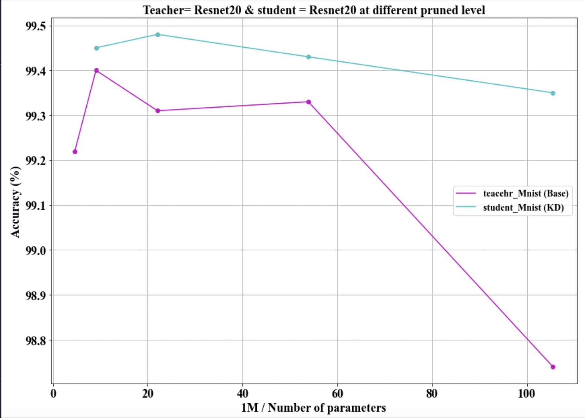

Improving Lottery Ticket Hypothesis with Knowledge Distillation
Role
During my first semester of my Master's degree and while coursing CSI5340 Introduction To
Deep Learning and Reinforcement Learning, I was part of a group of 4 international
students who decided to improve the innovative paper "THE LOTTERY TICKET HYPOTHESIS:
FINDING SPARSE, TRAINABLE NEURAL NETWORKS" by adding an extra step. This was another
training technique for deep neural networks called Knowledge Distillation.
Problem
Sparse Neural Networks tend to be complex and massive, demanding vast amounts of processing
power and storage when they need to be run. The Lottery Ticket hypothesis describes an
innovative pruning technique for neural networks based on masks. But our job here was
to use that pruned network as a base and make it even smaller but try to increase
its efficiency.
Solution
To test our hypothesis, we performed many different experiments. First, let me say that we used
different datasets.
MNIST
CIFAR 10
CIFAR 100
And also different architectures:
RESNET 18
RESNET 20
VGG 16
And we used different combinations of architectures to function as teacher (bigger architecture)
and student (smaller architecture).
The main idea of how Knowledge Distillation works is first to train a big model with
many different parameters. And then use its labels to train a smaller model.
With this idea in mind, I will start presenting our results. Please notice how the accuracy
of our student model (VGG 16) increases as we prune (or use the lottery ticket hypothesis), as
you can observe in the image below. The temperature parameter also affects the performance of
our models.

Now that I have shown that the lottery ticket hypothesis works with our data let me also
show that the knowledge distillation method also works perfectly in the following image
you can appreciate how the student (which in this case is the same model but pruned)
outperforms the teacher in accuracy at every pruning level.

With this short description, my team concluded that it is possible to combine these two
training methods and create compact models based on the original sparsed ones with even
better performance metrics.
Code and Further Information
Please feel free to use our work citing us, in this link you will find our repository
with the notebooks we used
link to data and code